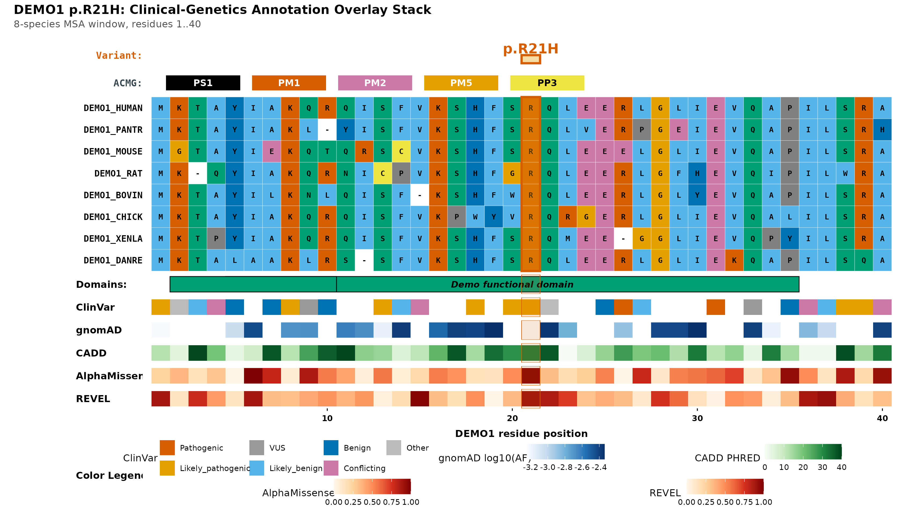
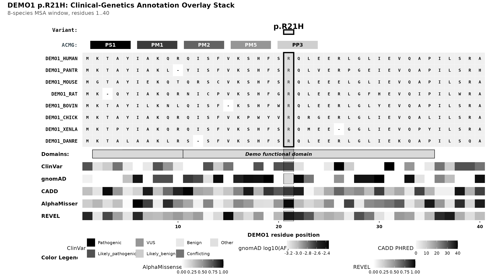
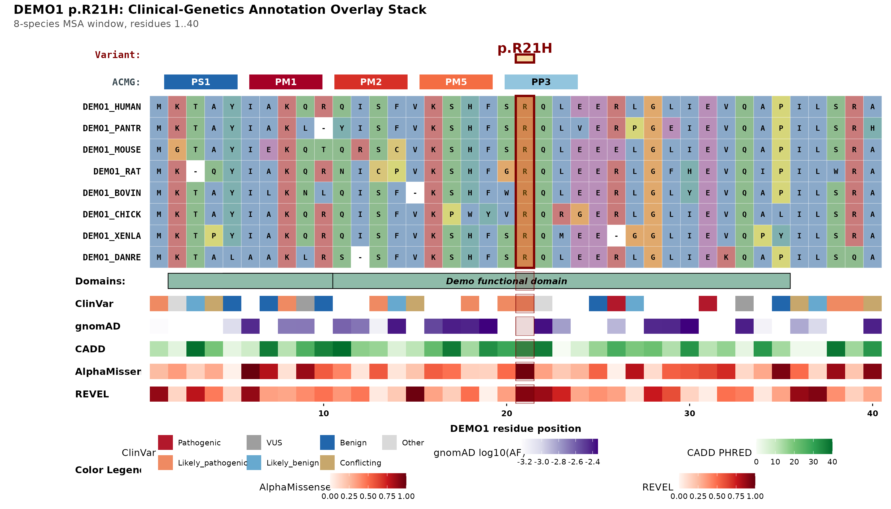
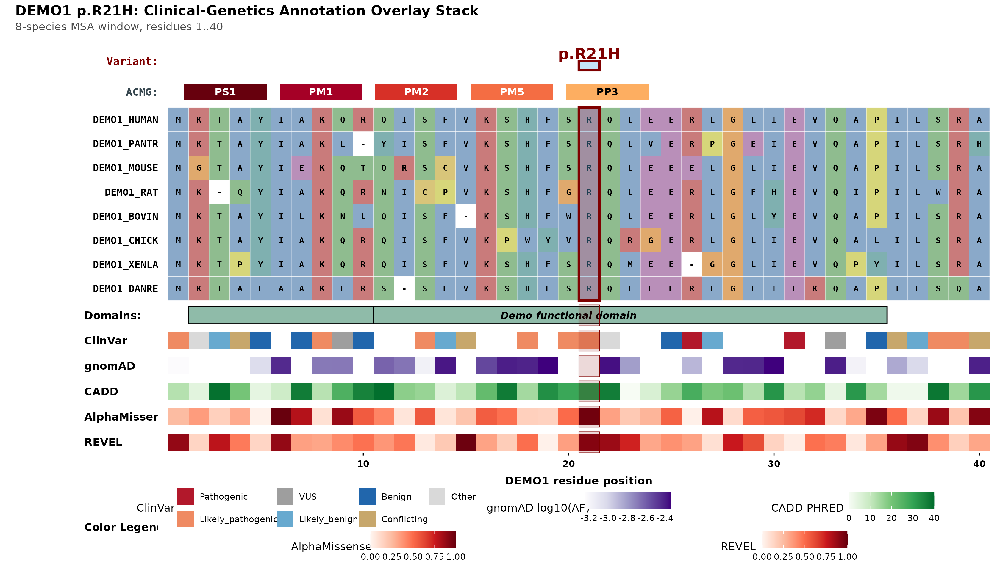
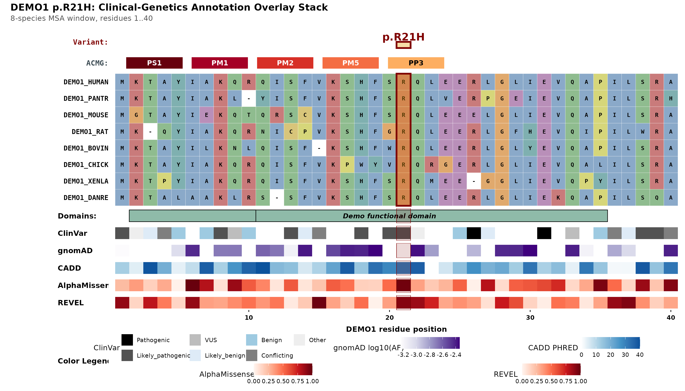
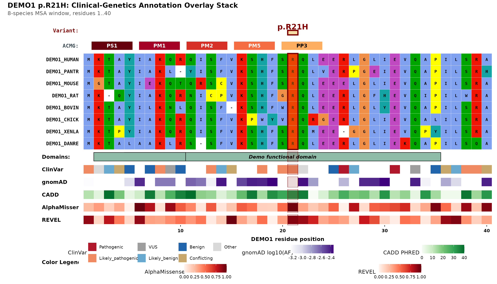

Journals have opinions about colour. msaVariant ships
three presets that cover the usual demands — a muted default, an
explicit colourblind-safe palette, and pure black-and-white — plus
per-element overrides for when a house style needs something
specific.
library(msaVariant)
Sys.setenv(MSAVARIANT_CACHE = tempfile("msaVariant_cache_"))
import_local_bundle(
system.file("extdata", "DEMO1.rds", package = "msaVariant"),
gene = "DEMO1"
)
demo_fasta <- system.file("extdata", "demo_aligned.fasta",
package = "msaVariant")DEMO1 is synthetic demonstration data, not real annotations. The same variant,
p.R21H, is rendered in every scheme below so the only thing changing between figures is colour.
The three presets
"journal" — the default
Muted, professional, no neon. The ACMG chips run from dark red (strong evidence) through orange to amber (supporting), which is both semantically intuitive and monotonic in luminance.
plot_variant_overlay(
gene = "DEMO1",
aligned_fasta = demo_fasta,
variant_pos = 21,
variant_label = "p.R21H",
color_scheme = "journal"
)
"colorblind" — explicit Okabe–Ito
Draws from the Okabe–Ito qualitative palette, designed to stay distinguishable under deuteranopia, protanopia and tritanopia. Reach for this when a reviewer asks for a colourblind-safe figure by name, or when the categorical ClinVar track is carrying a lot of the message.
plot_variant_overlay(
gene = "DEMO1",
aligned_fasta = demo_fasta,
variant_pos = 21,
variant_label = "p.R21H",
color_scheme = "colorblind"
)
"grayscale" — for black-and-white print
Every sequential ramp becomes a luminance ramp and the MSA tiles go flat light grey, leaning on the bold residue letters rather than colour to stay readable. Use this when a journal charges for colour figures, or to check that a colour figure would still survive being photocopied.
plot_variant_overlay(
gene = "DEMO1",
aligned_fasta = demo_fasta,
variant_pos = 21,
variant_label = "p.R21H",
color_scheme = "grayscale"
)
Comparing the three side by side is the fastest way to see the design constraint the defaults are built around: the ACMG chips and every continuous track stay ordered by darkness, so the grayscale version loses hue but never loses the ranking.
Per-element overrides
Every override is applied on top of the preset, so you change only what you name and inherit the rest.
ACMG chip colours
acmg_colors takes a named vector over
PS1/PM1/PM2/PM5/PP3.
Partial vectors are fine — unnamed codes keep their preset colour.
plot_variant_overlay(
gene = "DEMO1",
aligned_fasta = demo_fasta,
variant_pos = 21,
variant_label = "p.R21H",
acmg_colors = c(PS1 = "#2166AC", PP3 = "#92C5DE")
)
Chip label text is chosen automatically — black or white, whichever has better contrast against the fill by WCAG relative luminance — so a dark override will not leave you with unreadable text.
Variant highlight
variant_highlight_color sets the fill of the column
highlight that runs through the header, the MSA and every track. The
outline colour stays with the scheme.
plot_variant_overlay(
gene = "DEMO1",
aligned_fasta = demo_fasta,
variant_pos = 21,
variant_label = "p.R21H",
variant_highlight_color = "#56B4E9"
)
Track palettes
track_palettes is a named list accepting any of
clinvar, gnomad, cadd,
alphamissense and revel. Continuous tracks
take a vector of colours ramped low-to-high; the categorical ClinVar
track takes a vector named by significance level.
plot_variant_overlay(
gene = "DEMO1",
aligned_fasta = demo_fasta,
variant_pos = 21,
variant_label = "p.R21H",
track_palettes = list(
cadd = c("#FFFFFF", "#9ECAE1", "#4292C6", "#08519C"),
clinvar = c(Pathogenic = "#000000",
Likely_pathogenic = "#525252",
VUS = "#BDBDBD",
Likely_benign = "#DEEBF7",
Benign = "#9ECAE1",
Conflicting = "#7F7F7F",
Other = "#EEEEEE")
)
)
MSA residue colours
msa_color_scheme takes either a scheme name —
"journal", "colorblind",
"clustal" or "grayscale" — or an explicit
named per-residue vector. This is independent of
color_scheme, so you can keep journal-muted tracks over a
familiar Clustal-coloured alignment:
plot_variant_overlay(
gene = "DEMO1",
aligned_fasta = demo_fasta,
variant_pos = 21,
variant_label = "p.R21H",
color_scheme = "journal",
msa_color_scheme = "clustal"
)
The three non-Clustal MSA palettes colour by amino-acid property group (hydrophobic, positive, negative, polar, cysteine, glycine, proline, aromatic) rather than per residue, which keeps a 20-colour legend from swamping the figure.
Saving for publication
plot_variant_overlay() returns a patchwork
object, so ggplot2::ggsave() handles output. Two settings
cover most submission requirements:
p <- plot_variant_overlay(
gene = "DEMO1",
aligned_fasta = demo_fasta,
variant_pos = 21,
variant_label = "p.R21H"
)
# Raster at publication resolution
ggplot2::ggsave("demo1_R21H.png", p,
width = 15, height = 9, dpi = 300, bg = "white")
# Vector — preferred by most journals; text stays selectable
ggplot2::ggsave("demo1_R21H.pdf", p,
width = 15, height = 9, device = grDevices::cairo_pdf)Most journals want 300 DPI for raster figures and will accept — often prefer — vector PDF. Because every panel is drawn with ordinary ggplot2 primitives, the PDF is genuine vector output: residue letters stay crisp at any zoom, and a copy-editor can select the text.
If the target is a black-and-white page, render with
color_scheme = "grayscale" rather than letting the printer
convert a colour figure. The preset’s ramps are luminance-monotonic by
construction, so evidence strength and score magnitude survive; an
automatic conversion of the journal palette can collapse
distinct hues onto near-identical greys.
See also
-
vignette("toggling-layers")— removing tracks to simplify a figure -
?plot_variant_overlay— every colour argument in one place